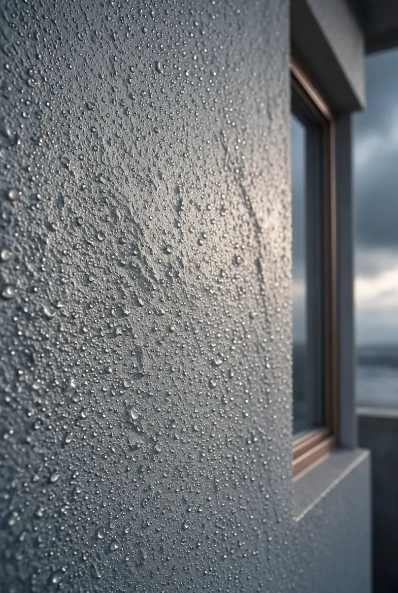
Hydrofuge façade
Protégez durablement votre façade contre l’humidité, les intempéries et les salissures grâce à un traitement hydrofuge incolore ou coloré.
Valorisez l’apparence de votre maison tout en la protégeant contre l’humidité et les agressions extérieures.
Coupe d’un mur
Touchez une partie du mur : vous verrez le problème, la prestation qui le traite et le lien vers sa page.
Protégez durablement votre façade contre l’humidité, les intempéries et les salissures grâce à un traitement hydrofuge incolore ou coloré.
Éliminez mousses, traces vertes et salissures pour redonner un coup de propre et de fraîcheur à votre façade.
Redonnez un coup d’éclat à votre façade avec un nettoyage en profondeur, respectueux des matériaux et durable.
Redonnez vie à vos murs extérieurs avec un ravalement complet : esthétique retrouvée, protection renforcée, et valeur de votre bien boostée.
Protégez et sublimez votre maison avec un revêtement de façade esthétique, durable et parfaitement adapté à votre bâti.
Stoppez les infiltrations d’eau avant qu’elles ne causent des dégâts : murs humides, moisissures, fissures ou affaissements.
Éliminez durablement l’humidité de votre maison grâce à un diagnostic précis et des solutions ciblées, efficaces et durables.
Stoppez l’humidité qui remonte dans vos murs et assainissez durablement votre habitation avec un traitement anti-remontées capillaires.
Éliminez le salpêtre et traitez l’humidité à la source pour assainir durablement vos murs intérieurs ou extérieurs.
Assainissez votre cave et dites stop à l’humidité, aux odeurs et aux moisissures avec un traitement durable et efficace.
Redonnez éclat et propreté à votre terrasse avec un nettoyage en profondeur adapté à chaque matériau.
Les 11 prestations façade
Hydrofugation, démoussage, nettoyage ou ravalement complet : nous redonnons éclat et solidité à vos façades. Nos traitements ciblent aussi les problèmes d’humidité, de salpêtre ou d’infiltration pour assainir durablement vos murs.

Protégez durablement votre façade contre l’humidité, les intempéries et les salissures grâce à un traitement hydrofuge incolore ou coloré.
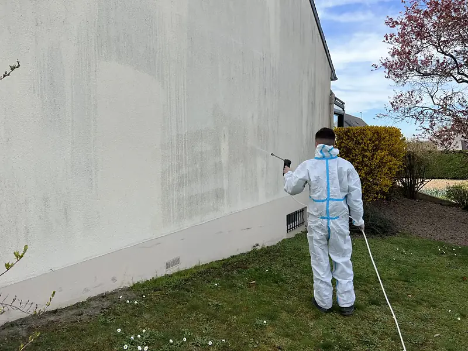
Éliminez mousses, traces vertes et salissures pour redonner un coup de propre et de fraîcheur à votre façade.
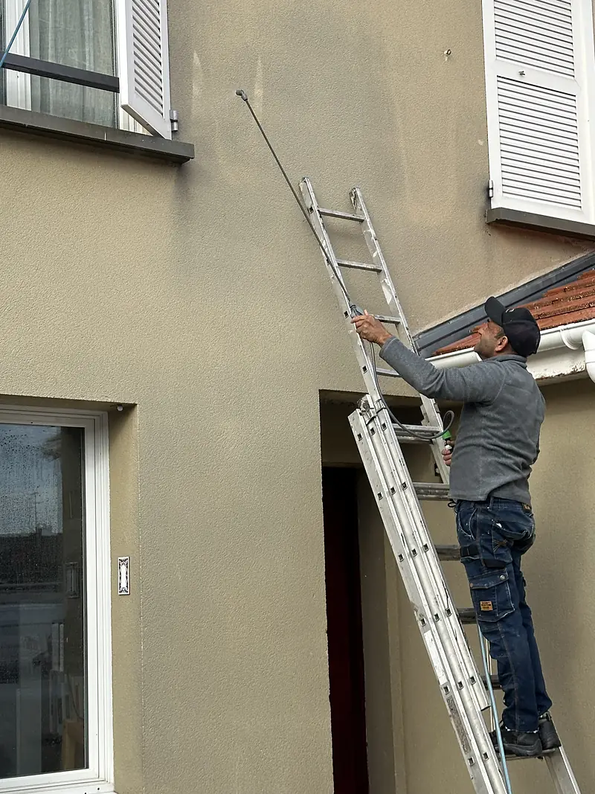
Redonnez un coup d’éclat à votre façade avec un nettoyage en profondeur, respectueux des matériaux et durable.
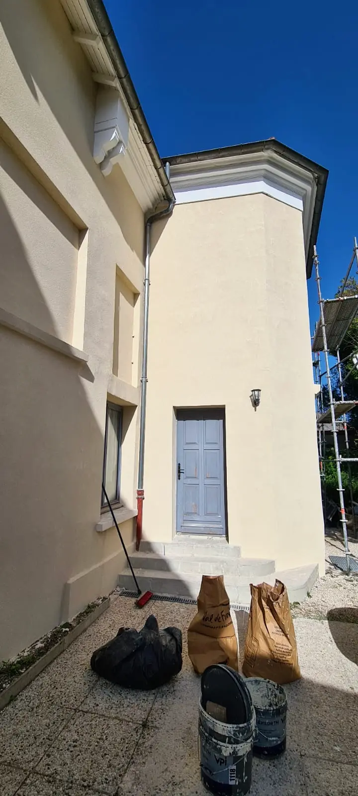
Redonnez vie à vos murs extérieurs avec un ravalement complet : esthétique retrouvée, protection renforcée, et valeur de votre bien boostée.
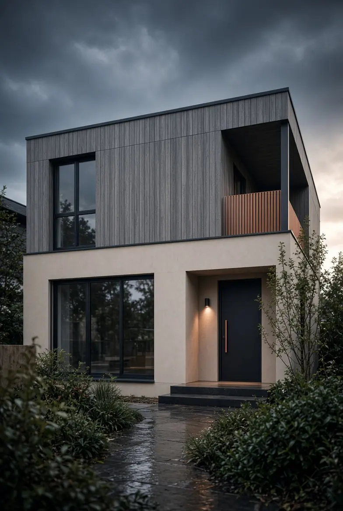
Protégez et sublimez votre maison avec un revêtement de façade esthétique, durable et parfaitement adapté à votre bâti.
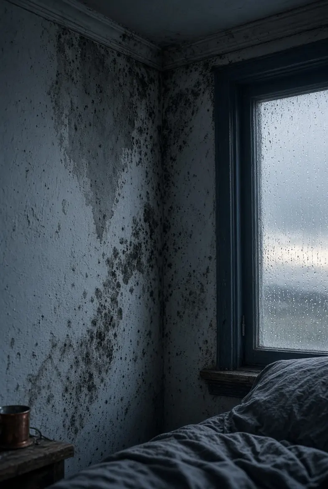
Éliminez durablement l’humidité de votre maison grâce à un diagnostic précis et des solutions ciblées, efficaces et durables.
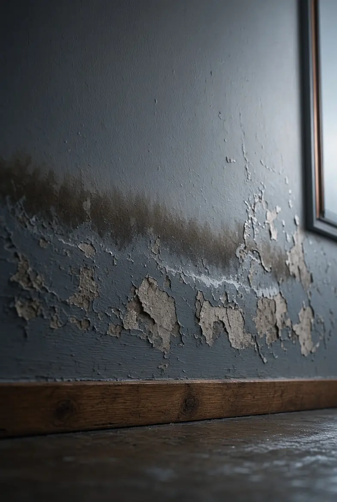
Stoppez l’humidité qui remonte dans vos murs et assainissez durablement votre habitation avec un traitement anti-remontées capillaires.
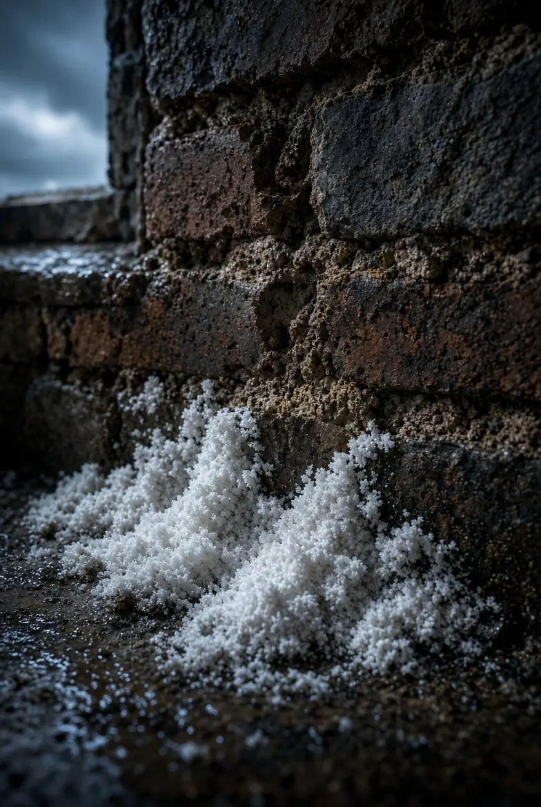
Éliminez le salpêtre et traitez l’humidité à la source pour assainir durablement vos murs intérieurs ou extérieurs.
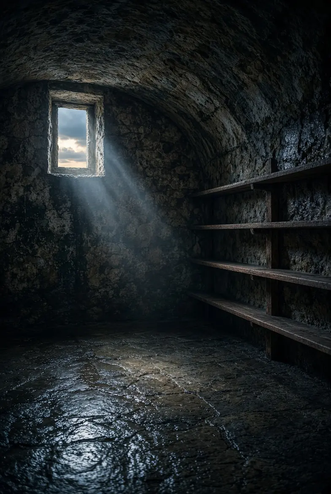
Assainissez votre cave et dites stop à l’humidité, aux odeurs et aux moisissures avec un traitement durable et efficace.
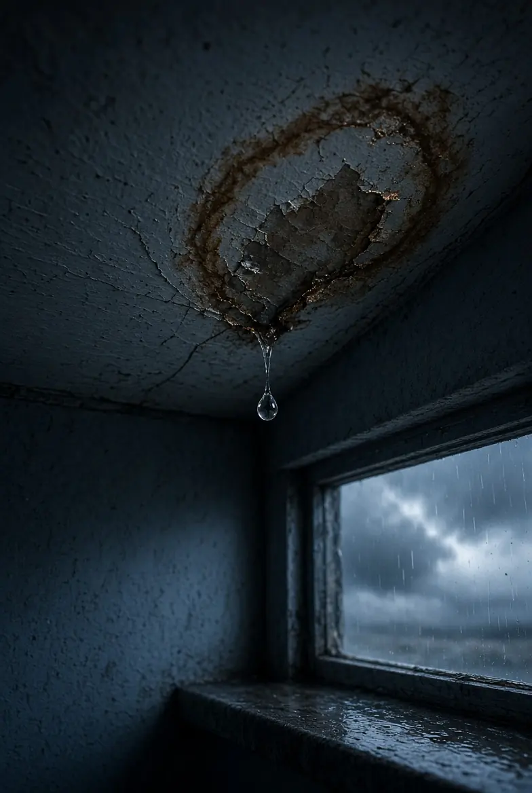
Stoppez les infiltrations d’eau avant qu’elles ne causent des dégâts : murs humides, moisissures, fissures ou affaissements.
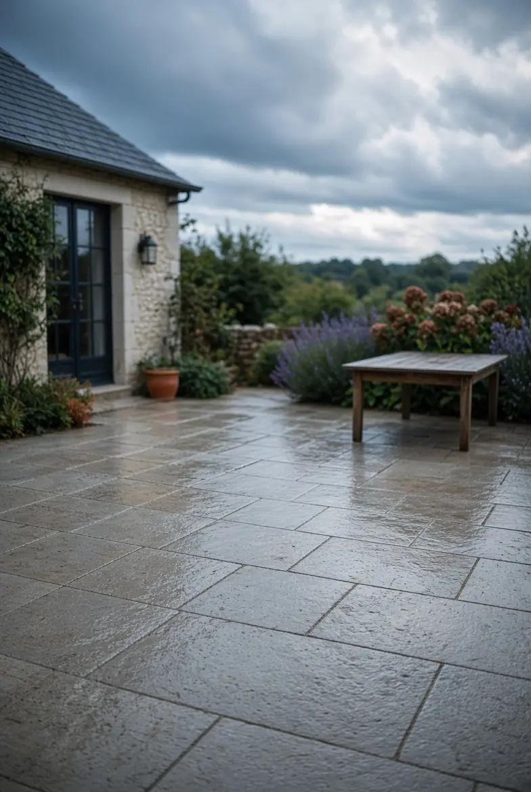
Redonnez éclat et propreté à votre terrasse avec un nettoyage en profondeur adapté à chaque matériau.
Réalisations façade
Une fuite, une mousse, un doute ?
Décrivez ce que vous voyez : vous saurez quoi faire, et le devis est gratuit.